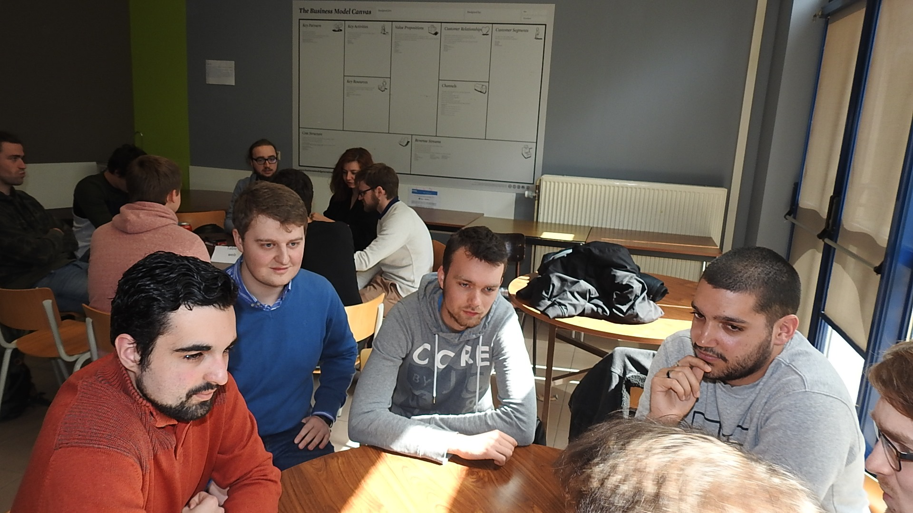

Lors de ce "speed dating", nous avons été divisé en groupe pour passer
de table en table par rapport à des thèmes de stages.
Les étudiants de troisième année de bachelier en Technologie de
l'informatique nous expliquaient leurs stages effectués en
entreprise.
Les différentes tables étaient intéressantes et les étudiants
stagiaires nous ont rassuré sur le monde du stage.
Cela m'a également permis de comprendre que j'allais tenter de
privilégier un stage en développement, si possible Web.
